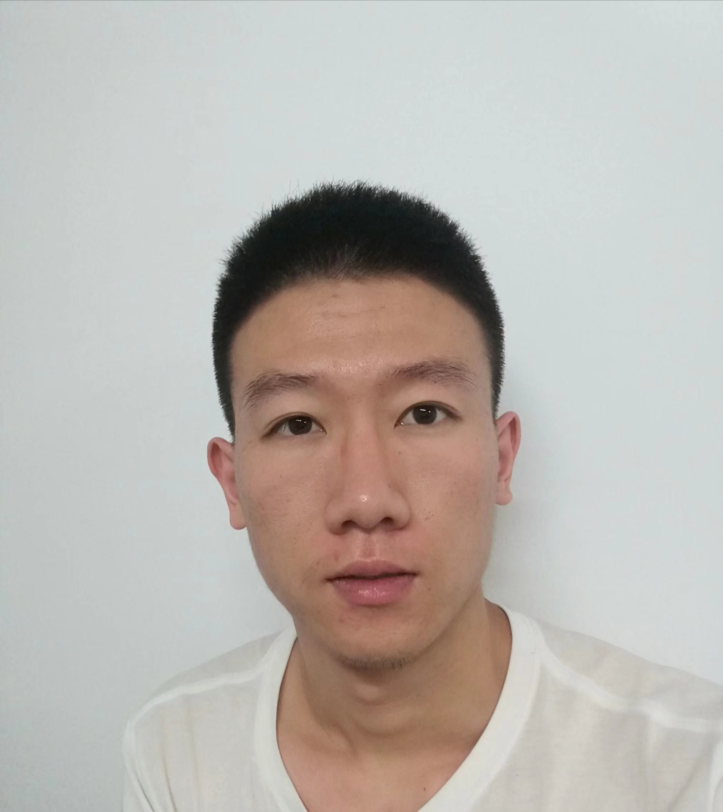

|
 |
Chuang Zhang (张闯)
Mater Student University of Shenyang Pharmaceutical Email: zhangchuang0901.@gmail.com CV. |
About
|
I am a second-year master student in Wuya Innovatin College at Shenynag Pharmaceutical University, supervised by Prof. He Zhonggui.
I earned my bachelor's degree in phramcy at Shenynag Pharmaceutical University. I have spent two years for master's degree till now in pharmaceutical sicence in Prof. He's labortary to develop nanoparticles and liposomes for anticancer drug delivery and then to study their PK/PD in the animal model.
During the graduate period, I participated in and carried out many scientific research projects and therefore accumulated a lot of experience. These experiences encourage me to explore more in this field.
|
News
Research
Glutathione Pulse Therapy: Promote Spatiotemporal Delivery of Reduction-Sensitive Nanoparticles at the "Cellular Level" and Synergize PD-1 Blockade Therapy. |
Teaching
|
Teaching Assistant, Pharamaceutical Science Experiments 2020 Fall Shenyang Pharmaceutical University |
Selected Awards
Miscellaneous
|
I enjoy exploring the unknown and creating new things. I am a self-motivated person with team spirit.
During my spare time,I like swimming and jogging. I also like travelling to learn different cultures and to make new frends. .
|